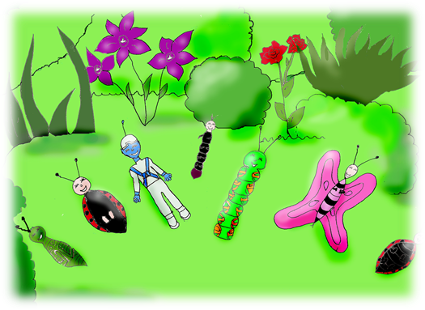

Eu sou Eu de um outro Mundo
PRÓLOGO
O Planeta Terra é um dos Viventes deste Universo infinito. E no planeta Terra habitam finitos Viventes e uns outros tantos aos quais não se atribui Vida. Por muito separados que pareçam estar, sendo classificados em Reinos, Filos, Classes, Ordens, Famílias, Géneros e Espécies, todos interagem, confinados neste pequeno globo que orbita o nosso grandioso Sol. Junto aos nossos pés há um mundo de pequenos seres que vivenciam jornadas fantásticas. Vamos então olhar para baixo, mas com uma visão muito elevada, presenciando uma história de outro mundo. Tornemo-nos pequeninos, insignificantes e desta maneira conseguimos brincar com criaturas simples, de uma extrema humildade, desprezadas por muita gente, mas que contribuem para o bem estar e equilíbrio do planeta que também é a nossa morada. São pequenos Mundos dentro do nosso Mundo. São grandes Universos dentro do nosso Universo. “Quem tiver olhos, veja. Quem tiver ouvidos, ouça”. As crianças veem e ouvem...
A CHEGADA AO JARDIM
— Fiuuuuuuu... Ssssssssssssssssss... Ploc Ploc Ploc.... Hoje começa a Primavera. Estamos num jardim de uma casinha pequena e muito arrumada, mas com um espaço enorme à sua volta.
Não tem grades nem muros.
Também não é preciso, pois nesta morada tudo é simples e apenas se sabe onde acaba o jardim e começa a estrada, porque as árvores cresceram posicionadas como guardiãs e porteiras de boas vindas.
São árvores altas, de tronco forte, com copas majestosas e ramos abertos para o céu e para os lados. Parecem braços a querer abraçar quem passa.
O jardim... ai como este jardim é bonito!
Tapetado de relva muito verde e bem cuidada.
Nele crescem canteiros de flores de todas as cores, assim como flores de todas as espécies. Grandes, pequenas, pequeníssimas, com pétalas, com cálices, com cachos, com picos, sem picos. Algumas das flores têm nomes de pessoas. Ou serão as pessoas que têm nome de flor? Margarida, Rosa, Flora, Hortência, Íris, Flor. As árvores não ficam de fora nessa miscelânea e apelidos são dados às criaturas humanas para que não se esqueçam delas: Oliveira, Carvalho, Pereira, Macieira, Pinheiro. Neste jardim tudo se confunde.
A disposição natural do Reino Vegetal é primorosa.
A casinha fica colocada no centro do jardim e está rodeada por 24 canteiros e estes distanciam-se dela uns 12 passos largos. E as árvores guardiãs crescem num segundo círculo, distanciando-se também uns 12 passos das flores. São 48 sentinelas, sempre observando tudo o que entra e sai do jardim, por terra e pelo ar. O sol eleva-se neste preciso momento por detrás das copas das árvores e ilumina todos os cantos e recantos deste lugar.
As sombras transmutam-se em luz e o relvado muda de cor verde escura para verde resplandecente.
Tudo brilha, tudo está luminoso.
Tem início um movimento discreto, bem debaixo dos canteiros das flores.
Começam a sair pequenos insetos das suas tocas, que bocejam e se espreguiçam, dando um bom dia ao sol.
E no céu voam os passarinhos que saíram dos seus ninhos e que dançam em alegria.
Cantam e gorjeiam, acordando tudo e todos. O dia começou!
Hoje começa a Primavera. — Fiuuuuuuu... Ssssssssssssssssss... Ploc Ploc Ploc....
Sente-se uma brisa suave e um monte de bolinhas, parecidas com bolas de sabão, invadem o ar do jardim vindas de lugar nenhum. São de todas as cores e algumas têm vários tons, assemelhando-se a um arco-íris.
Quando tocam o chão, Ploc Ploc Ploc, desaparecem no nada.
— Olhem que bolinhas estranhas! – diz uma lagarta que rasteja apressada para chegar a uma das bolas que pousou perto de si. Mas chegou atrasada, porque a bolinha fez Ploc.
— São lindas! E são tantas! – o gafanhoto dá um grande salto na esperança de apanhar uma.
— Devem ter estado a lavar roupa no céu! – sussurra uma joaninha, tentando encontrar uma lógica para o acontecimento. Os insetos estão boquiabertos e sem saber o que pensar. No seu jardim está a nevar… bolas de sabão. — Fiuuuuuu.... um vento muito fresco faz esvoaçar as bolas no ar.
Como são seres organizados e muito conscientes do seu jardim, quando alguma coisa fora do comum acontece, reúnem-se sempre e como de costume, em Unidade, debaixo do canteiro dos lírios.
Aquele foi, é e sempre será o canteiro das reuniões.
Exércitos de formigas, mãos cheias de joaninhas, braçadas de gafanhotos e um monte de lagartas esperam junto aos lírios, na esperança de que algumas das bolinhas tombem perto de si.
Uma bola de sabão começa a flutuar na direção deles. Ora vai para a direita, ora vai para a esquerda, agora sobe, depois desce e, quando está quase a cair e fazer Ploc, isso não acontece e ela volta a subir.
Os olhinhos dos insetos ali presentes percorrem o trajeto da misteriosa bola.
E em uníssono vão murmurando: — Oooooooh! Eh! Iiiih! Uh! Aaaaaaaah! Então, uma surpresa acontece.
QUEM SOU EU
O sol sobe mais um palmo no céu e as flores mais dorminhocas só agora começam a abrir as pétalas na sua direção.
As gotículas de água dentro delas, escorrem e pingam na terra junto ao seu caule. É assim que as flores lavam a cara logo pela manhã.
É neste momento que a bola dançarina e flutuante pousa em frente do plenário dos insetos. E não faz Ploc.
Fica durante uns segundos a mudar de cor, a mesclar as cores, a avivá-las até que se torna azul, estática e silenciosa.
Os insetos silenciosos ficaram. Ninguém se mexe, nem pestaneja.
Um canteiro de girassóis, que são aquelas flores que sorriem o dia inteiro na direção do sol, retorcem as suas hastes para também poderem ver o que está a acontecer.
E a passarada, deixando de gorjear, recolhe-se nos ramos da árvore vigilante, mesmo em frente da misteriosa bola azul. — Ssssssssssssssssss... Ouve-se um sibilo parecido com o zunir dos insetos, mas mais melodioso.
Uma abertura começa a surgir na parte da bola virada para os observadores de olhos arregalados.
E o mais engraçado é que essa abertura dá a volta a toda a superfície da esfera e desaparece no lado oposto. A bola simplesmente some.
No seu lugar fica um pequeno ser, cuja estatura cabe na palma da mão de uma criança.
Não! Não pode ser deste mundo o que está a acontecer. Mas ao mesmo tempo não é nada assustador. O pequeno recém-chegado tem um corpo com características humanas - cabeça, tronco e membros. Tem um rosto amendoado e olhos bem grandes e escuros. As orelhas são pontiagudas e pequeninas. O nariz é arrebitado e as bochechas dão um ar engraçado à expressão facial do visitante, sempre sorridente. Está vestido com um traje inteiro e prateado, luvas e botas da mesma cor. E agora, o mais interessante. A cor da pele deste pequeno ser é azul, da cor do céu ou do mar, tanto faz, porque é sempre maravilhosa. Mais um pormenor. Na sua cabeça tem um pequeno chapéu-capacete, com uma única antena, deixando visíveis as orelhas. A antena não está quieta, sempre a tremelicar com os movimentos. — Quem és tu? – pergunta um dos insetos mais despachado. No jardim banhado pelo sol todos aguardam a resposta. — Eu... sou Eu! – responde o pequeno ser, rasgando um sorriso de orelha a orelha. O mar dos bicharocos avança um passo em frente, atraído pela curiosidade.
— Qual é o teu nome? De onde vens? O que vieste fazer aqui? – pergunta uma lagarta trapalhona, verde e rechonchuda. Um burburinho tem início e o entusiasmo começa a aumentar. Querem todos fazer perguntas sem fim e ao mesmo tempo.
O jardim está mais vivo do que nunca, porque não há ninguém que não queira perceber quem é o Eu sou Eu, recém aterrissado numa bola de sabão.
De modo a não se atrapalharem uns aos outros, rapidamente fica determinado que para perguntar basta levantar a pata no ar e o Eu sou Eu aponta o inseto questionador.
Mas antes de iniciar as respostas às “milhentas” questões que já borbulham, Eu sou Eu pede-lhes para fazer uma só pergunta:
— E vocês, como é que se chamam?
— Somos as lagartas!
— Somos as formigas!
— Somos as borboletas!
E assim, as pequenas criaturas vão levantando as patitas no ar e dando os seus nomes de conjunto. O Eu sou Eu dá uma gargalhada, faz uma pirueta e diz: — Veem?! Sintam! Vocês são Unidade porque quando se pergunta o nome respondem em União. É exatamente o que acontece no meu planeta. Todos somos chamados, mas sabemos quem é que precisa avançar aquando do chamamento. Assim estamos sempre em sintonia e em prontidão. No meu mundo todos sabemos tudo ao mesmo tempo. Eu sou Eu continua com o esclarecimento: — Venho de AnThais, um planeta encantador que orbita Sírius, que é o nosso sol. Distancia-se daqui apenas 8,5 anos-luz, o que é bem perto. Bem perto, ora muito bem... vamos lá fazer as contas. Se a velocidade da luz é 300.000 quilômetros por segundo, se 1 minuto tem 60 segundos, se 1 hora tem 60 minutos, se 1 dia tem 24 horas, se 1 mês tem 30 dias, se 1 ano tem 12 meses, andando de trás para frente e multiplicando tudo por oito e meio, isto dá qualquer coisa como 81 trilhões de quilômetros.
Humm!... 81 trilhões de quilômetros percorrem-se com um olhar no céu quando se observa uma estrela!
No final das contas não é longe. — Que fixe! É bem pertinho!
— Podemos ir lá?
— Sim! Vamos nas bolas de sabão.
— E se elas explodem na viagem?
— Não sejas pateta, são bolas especiais.
— Especiais e espaciais!
— Eu ando um metro e já fico cansada!
— Ficas cansada porque és uma lesma barriguda.
— Eu sou grande demais para entrar na bola de sabão!
O Eu sou Eu está divertidíssimo com tudo o que ouve. O entusiasmo é tal, que os insetos bisbilhotam uns com os outros e as conversas misturam-se.
Por um bom bocado de tempo esquecem-se do Eu sou Eu que se senta numa pedra, cruza as pernas e fica a observar o jardim.
O sol avança devagarinho no céu com os seus raios de luz a acariciar cada flor deste lugar.
De repente alguém pergunta: — Os habitantes de AnThais são todos como tu? Ora bem, aí está uma pergunta importante cuja resposta vai transportá-los a um mundo totalmente desconhecido. — Sim! – diz o Eu sou Eu – são todos como eu e todos diferentes de mim. Eu vou explicar. No meu planeta não há forma fixa. Temos Liberdade e Autonomia para sermos o que quisermos. Mas sempre em Unidade. Por exemplo, eu escolhi visitar o planeta Terra porque o achei engraçado e pequenino. Então, decidi a aparência que queria ter, as roupas que usaria, o local de pouso, os contatos imediatos e o veículo que me transportaria. Igualmente engraçado e agradável foi viajar numa Esfera Transdimensional. E assim aqui estou eu. Num clique faz-se luz na cabeça da multidão dos insetos.
Afinal não são bolinhas de sabão e nem tinham estado a lavar roupa no céu, mas são sim Esferas Transdimensionais.
O Eu sou Eu pode sentir o espanto dos insetos com a revelação. O panorama geral é de bocas abertas de admiração.
E as explicações continuam. — Uma Esfera Transdimensional é formada por um foco de energia que permite a fusão com quem se quer transportar. Este feixe energético é gerado por uma máquina muito simples que está ligada ao nosso sol – Sírius - e é acionada pelo pensamento. Quando decidimos viajar, basta informarmos os controladores espaciais do nosso desejo. Isto, porque todos os AnThaisianos são viajantes cósmicos e as plataformas de embarque são muito concorridas. Somos chamados na nossa vez. A Ordem e o Respeito fazem parte da nossa Essência. No dia do embarque podemos optar pela forma da nave, qualquer uma. Eu escolhi uma ET. — ET? – dizem os insetos em coro.
— ET - Esfera Transdimensional! – o Eu sou Eu sorri emanando carinho. Outra pergunta surge de imediato, feita por um dos insetos, mas que todos queriam fazê-la. — Mas como conseguiste entrar aqui?
— Muito fácil. Desagregando-me lá e agregando-me aqui. A ET permite isso mesmo. Ajustamo-nos sempre com o amanhecer porque este momento tem propriedades mágicas. E não se esqueçam que vos disse que em AnThais não temos forma mas podemos ter qualquer uma. Somos, bem... como hei de dizer... somos Pura Energia! E no nosso mundo, não há distância nem tempo. Eu sou Eu faz uma pausa, olha ao seu redor, depois para o céu, e continua: — Podemos viajar para qualquer lugar do universo na velocidade de um pensamento. Já visitei muitos planetas. E este em que vocês vivem, a Terra, é um planeta especial.
A Terra vista do espaço, é como um pixel insignificante e quase invisível.
Mas quando chegamos perto, revela-nos a magnificência dos seus continentes e oceanos.
Tem cor, relevo e textura.
Abriga um sem número de vidas.
Ela não dorme, está sempre vigilante e em perpétuo movimento.
A Terra supre, continuamente, as verdadeiras necessidades de todos que nela habitam.
Ela é Mãe! Terra Mãe! Mãe Gaia!

A PORTA DA CASA ABRE-SE
O sol continua a sua ascensão no céu e a temperatura do ar está muito agradável. Na tela azul celestial não estão desenhadas nuvens.
Mas, quando elas quando aparecem, são sempre um deleite e uma companhia para quem está na terra.
As pedras, as flores, as árvores, os animais, os insetos e até alguns humanos gostam de observá-las.
O vento sopra exalando-lhes vida e elas criam pinturas mutantes.
Os pássaros são uns privilegiados, porque podem se misturar com as nuvens.
Há sempre bandos de pássaros a voar no céu. A porta da casinha no meio do jardim abre-se.
Uma menina, de sardas no rosto, tranças no cabelo, com um vestido florido e os pés descalços, sai a correr pelo relvado.
Vem tão sorridente e cheia de alegria que o jardim, instantaneamente em comunhão, lhe sorri também.
Corre de braços abertos, como se fossem asas de gaivota, e de olhos fechados na direção do sol. E o sol inunda-a de energia.
Mas nem todos a sentem assim.
— Fujam! – grita uma formiga – Fujam que vem lá a barafunda!
E os insetos desatam a correr. Metem-se nas tocas, misturam-se nas flores e escondem-se nas árvores.
Num piscar de olhos a reunião debaixo do canteiro dos lírios fica sem nenhum bicho.
Apenas o Eu sou Eu permanece onde está divertindo-se com o enorme alvoroço presente.
E ri, ri muito.
A menina brinca sentada na relva, batendo as palmas e depois batendo numas mãos imaginárias à sua frente. É desta maneira que ela se entretém no jardim. Nunca está sozinha, mesmo que pareça estar. Canta e conversa com o vento, com os reflexos do sol que surgem por todos os lados e talvez com pequenos duendes invisíveis que só as crianças conseguem ver. Então Eu sou Eu diz: — Não vejo nenhuma barafunda. Vocês fogem do nada.
Perante esta afirmação, os insetos começam a espreitar dos seus esconderijos.
Novamente, e com muita ordem, os lugares da reunião debaixo do canteiro dos lírios vão sendo preenchidos.
O Eu sou Eu dá algum tempo para os mais assustados se recomporem.
A porta-voz formiguinha explica o porquê da fuga. — Sabes, nós vivemos neste jardim há muito tempo, mas, por vezes, quando estamos em grupo e somos muitos, os humanos fumigam-nos e atiram terra ou água sobre o local onde nos encontramos. Às vezes conseguimos escapar, outras vezes não. Eles acham que somos prejudiciais e dizem que somos pragas! Mal sabem eles que cuidamos e revolvemos a terra dos seus jardins. O Eu sou Eu levanta-se da pedra onde está sentado, abre os braços imitando asas de gaivota e corre, tal como a menina, pelo jardim. E só para junto aos insetos. E com muita doçura diz-lhes:
— Isso não devia acontecer! Mas lembrem-se de que grande parte dos humanos neste mundo são um pouco adormecidos. Muitos não vivem a Unidade, como eu no meu planeta e vocês nas vossas colónias.
Eles, desde muito pequenos e conforme vão crescendo e tornando-se adultos, ganham certos hábitos e acreditam que podem mandar em tudo e controlar tudo e todos à sua volta. Puro engano. Mas nem todos são assim. As crianças, por exemplo, são puras, sem crenças. Vivem no momento presente, o que lhes permite estar em harmonia. Mas elas nem sonham que é assim, porque o fazem NATURALMENTE. Brincam descontraídas e não têm maldade. Garanto que a menina não vai fumigar ou afogar nenhum de vocês. A vida para ela é uma Simples Brincadeira. Eu sou Eu tem razão.
As crianças são simples, não têm medo. Mesmo que se sujem por fora, permanecem limpas por dentro.
O seu coração é grande e é com ele que observam o mundo. Os seus olhos verdadeiros estão dentro do peito e não na cabeça!
Interagem com o que as rodeia de uma forma inocente e fluida. Pode ser feio, bonito, grande ou pequeno, preto, branco ou outra cor, sujo ou asseado, novo ou quebrado. Elas arranjam continuamente maneira de encontrar Beleza e Alegria em tudo.
São sempre Espontâneas, Diretas e Transparentes no que falam e fazem, o que por vezes, ou melhor, muitas vezes, os humanos adultos ficam sem saber o que lhes responder.
A linguagem das crianças é a do coração, livre, leve.
Mas com o tempo, com a educação que lhes é oferecida, com as regras e crenças da sociedade em que vivem, vão crescendo e sendo formatadas, vão-se adulterando e ficando aprisionadas nas coisas complicadas.
Pois tudo o que está fora do Coração é complexo.
Ao contrário das crianças, os adultos geralmente não fluem com a Vida e são muito enferrujados mentalmente. E complicam o que não é complicado.
— Joana! Joaninha, onde estás? – uma voz altifalante sai da casa e chega aos ouvidos de todo o jardim. A mãe da menina está a chamá-la. A Joana, que curiosamente tem nome de inseto, não se apercebe e continua a brincar com o seu amigo invisível. Rebola, dá cambalhotas, e faz com que os seus pezinhos nus deslizem na relva, apreciando a frescura, ou talvez, apenas sentindo as cócegas.
Ela ri sem parar, como se uma Onda de Vida subisse pelos seus pés.
— Joana!! És surda?! – grita novamente a mãe. Não, a menina não é, nem está surda e só neste instante fica atenta ao chamamento.
Levanta-se da cambalhota que acaba de dar e corre para dentro de casa. A porta fecha-se. O jardim está outra vez silencioso.
Mas é um silêncio que integra na sua plenitude:
O sussurrar do vento – Fiuuuuuuu!
O sibilar dos insetos – Ssssssssssss!
E o Ploc! Ploc! Ploc! de algumas bolas de sabão que só agora tocam o chão.
O sol continua o seu caminho entre o nascente e o poente.
É hora de almoço.
NO MUNDO DA LUA
— Cri! Cri! Cri! Ouviste como são barulhentos os humanos? – diz um grilo que emudece sempre que ouve vozes de gente. Mas desta vez não se pôs em fuga. Noutra ocasião teria fugido a sete patas. Eu sou Eu levanta-se da relva, sacode as pequenas folhas que caíram no seu traje prateado e diz: — É verdade que os humanos têm formas estranhas de se comunicar. Umas vezes falam, outras gritam e noutras sussurram. É conforme as emoções que vão sentindo. Riem, choram, ficam sérios e por vezes praguejam. Nessas alturas nem eles se entendem, porque raramente se silenciam, permitindo-se ouvir o que lhes é dito. Atropelam-se com os próprios pensamentos desnorteados e atropelam os outros com palavras. Usam-nas como armas. A Joana não ouviu o primeiro chamamento da mãe, porque estava concentrada na sua brincadeira. Tudo à sua volta deixou de existir enquanto cantava e sentia a relva nos pés, o vento na cara, o calor do sol no corpo. Vivia o momento Presente, o Aqui e o Agora. As crianças não se preocupam com o Passado e nem com o Futuro. Simplesmente saboreiam o Presente, como se fosse um brinquedo novo que acabaram de receber. Por essa razão se chama “presente”. E por essa mesma razão estão sempre felizes. Os insetos ouvem com atenção a voz suave do Eu sou Eu colocando o seu ponto de vista relativamente aos humanos. Ele continua: — Assim, aqui na Terra, por vezes dizem que as crianças estão no Mundo da Lua. E é completamente verdade. Estão na lua ou ainda mais longe. Elas têm a capacidade de fazer viagens para outros planetas sem saírem aqui da Terra. Em AnThais, contatamos com muitas que nos visitam. É um prazer para nós ouvirmos as suas histórias e aventuras. E existe coisa melhor do que viajar para onde se quer? Olhem para mim, eu sou de um outro Mundo! Eu sou Eu solta uma gargalhada e contagia todos com o seu riso. É de tal maneira intenso que as quarenta e oito árvores sentinelas ajustam a postura dos seus troncos, levando, inclusive, a calar os pássaros tagarelas que também tentam perceber o que está a acontecer.
Os insetos, sem controlarem o riso, começam a rebolar com as patas na barriga e alguns chegam mesmo a chorar de alegria.
Sem dúvida, a Primavera tem uma energia estranha que em tudo se entranha. Em tudo o que está em harmonia com ela. E neste dia, em que começa a Primavera, os insetos já sentem o Visitante de um outro Mundo, aterrissado no seu jardim há tão pouco tempo, como fazendo parte da sua vida desde sempre.
Neste Mundo, não há acasos, tudo tem um propósito.
O PORQUÊ DA ESCOLHA DESTE JARDIM
No planeta AnThais, os AnThaisianos habitualmente são seres de Luz sem forma.
Movem-se deslizando e gerando um campo energético de brilho e cores desconhecidas na Terra.
Para poderem ter uma ideia, só um bocadinho aproximada, do que é o ambiente de AnThais, visto que os terráqueos precisam visualizar para compreender, imaginem, no chão e num dia de vento, uma poça de água limpa mesclando-se com óleo derramado e a sua superfície está exposta ao Sol, que se reflete nela.
As cores desta mistura ficam brandas, visíveis, mas sem estarem individualizadas. E o vento faz aparecer imagens desfocadas num contínuo movimento de plasma, que gera mais cores e mais desenhos.
Esta analogia é apenas uma pincelada para a imaginação, porque é indescritível colocar em palavras o que não é deste mundo.
Assim, os AnThaisianos são a tal Unidade, funcionando como um Todo sem jamais perderem a Individualidade. Mas a individualidade para eles não existe, porque são um por todos e todos por um.
Comunicam-se instantaneamente e todos sabem o que cada um pensa e sente.
Mas como são a Unidade, não precisam trocar pensamentos.
Vivem em Harmonia porque são Amor. E porque são Amor emitem Luz. A Luz que os conduz novamente até ao Amor.
São viajantes cósmicos por natureza e fazem-no sempre com a mesma Alegria interior, sem distinguir os mundos que visitam.
E no espaço sideral, que só termina no infinito, há zilhões de mundos a visitar. O sol desloca-se mais um palmo no céu, está calor. Eu sou Eu e os insetos estão deitados no relvado, pernas esticadas e braços abertos. Riram tanto, mas tanto, que ficaram em estado de completude. Plenos de Alegria.

O riso é uma terapia. O mundo inteiro devia rir. — Porque escolheste o nosso jardim? – pergunta uma borboleta. — Muito simples! – diz Eu sou Eu - Eu só posso entrar em contato com alguém que sintonize de alguma forma com o meu Mundo. E o mundo dos insetos preenche esse requisito. No planeta Terra existem mais formas de vida com a mesma sintonia de AnThais, mas... nem todas são assim.
— É verdade, é verdade! – surgem várias vozes em conjunto. E uma formiguita continua com a linha de pensamento do grupo.
— Os humanos não têm essa frequência. Tudo o que para eles é desconhecido e que sai da sua rotina, mete-lhes medo, deixando-os desconfiados. E aos seres que não são gente como eles, tratam como inferiores. Eles acham-se os donos da Terra. Recolhem e acartam, tudo o que podem para dentro das suas casas, quer precisem, quer não precisem! E até a Mãe Gaia não percebe porque eles agem assim. Afinal, ela está continuamente a produzir alimentos, por cada poro seu, seja na terra, seja no mar, para todas as criaturas que nela habitam. A Abundância é enorme. Chega para todos e sobra sempre. Mas eles acham que não. Uma joaninha pega na conversa: — E como nos perseguem? Adoram apanhar insetos e meter-nos em frascos e caixas! E depois deixam-nos ali esquecidos sem nos abrirem as prisões. Mas acabamos por nos divertir quando vemos as caras que fazem, com o nariz colado ao frasco, olhando para nós.
— Isso é porque são vocês, Joaninhas. A nós, formigas, simplesmente exterminam-nos deste mundo. Mas não faz mal, aparecemos noutro lado. A nossa Consciência jamais pode ser aniquilada. Eu sou Eu sente-se em casa porque aquele oceano de pequenos insetos tem uma Enorme Consciência de Si e do que os rodeia. Então diz: — Só uma minoria dos humanos consegue ver o que é óbvio: o que fazem à mais pequena das criaturas é feito igualmente ao seu Criador! Grande parte desta humanidade ainda dorme com os olhos abertos. Todos os Reinos deste mundo, o mineral, o vegetal e o animal, que aqui habitam e são Unidade percebem isso, com exceção dos homens que poluem, destroem, devastam o que a Mãe Gaia lhes oferta com Amor! E ainda por cima se julgam superiores e inteligentes! Não acham esta a maior piada neste mundo? E mais uma vez desatam todos a rir às gargalhadas.
Sim, só pode mesmo ser uma anedota. Não é à toa que as crianças pequenas não percebem o mundo dos grandes. Porque elas têm a capacidade de ver com o coração, um Mundo que é invisível aos olhos dos adultos. Veem que tudo nesta vida está em conexão, como o tal plasma colorido que se move sem parar.
Veem que quando uma borboleta voa, o movimento gerado pelas suas delicadas asas gera um turbilhão no outro lado do planeta. Que há uma explosão de Amor, quando uma pequena e frágil flor se oferta ao Sol, abrindo as suas pétalas para o abraçar. Que o que é feio e desconcertante no mundo, desaparece quando se fecham os olhos da cara e se abrem os do Coração. As crianças vivem no Hoje, sem pensar no que já passou e sem se preocupar com o amanhã, porque simplesmente eles não existem. O riso ainda estava no ar quando Eu sou Eu recomeça a falar: — Quando decidi fazer esta viagem quis experimentar uma ET. São naves de pequeno tamanho, logo eu teria de ser pequenote para viajar nela. E ninguém melhor que vocês para me receberem! Uma onda de gratidão emana dos insetos.
Eu sou Eu dá um suspiro. Estão em sintonia.
E por falar em sintonia, uma formiga pergunta: — Por que é que só tens uma antena na tua cabeça? Nós temos sempre duas! Servem-nos de radar para nos localizarmos e são muito importantes para nos cumprimentarmos umas às outras.
O AnThaisiano delicia-se com a simplicidade dos insetos. Então explica: — A antena que veem é a minha ligação com o meu mundo. Através dela eu comunico com AnThais e recebo informações quando necessário. Mantém-nos em Unidade quando viajamos para mundos desligados, dualitários, como a Terra. Sempre que preciso de alguma coisa, basta-me sintonizá-la e é imediato o resultado.
— Como eu gostaria de ter uma antena assim! – diz a mesma formiga.
— Eu preciso de duas assim! Cada salto que dou e o vento me leva... fico sem saber onde estou. – fala um gafanhoto que é meio deslocalizado. Eu sou Eu sente um prazer imenso, aqueles insetos não são deste mundo!
Um deles pergunta:
— E a tua forma no planeta AnThais é sempre sem forma?
— Não! No meu planeta, como também já falei, todos somos luz, mas podemos assumir qualquer aparência. Quando isso acontece, escolhemos... bem… como hei-de explicar... escolhemos um disfarce, uma máscara. A tonalidade dela é sempre azulada, porque está em relação com o nosso sol – Sírius! Mas a forma pode ser qualquer uma. Posso ser mesmo uma lagarta ou uma borboleta. Posso ser uma nuvem. Ou uma menina como a Joana. Ou outras formas que são desconhecidas aqui na Terra. Quando nos mascaramos com uma forma é simplesmente para nos divertirmos, para brincarmos. É uma Alegria enorme fazê-lo. E contagiamos todos. Eu sou Eu para de falar e olha com ternura o jardim. Neste momento, a Joana abre novamente a porta de casa e sai a correr, trazendo na mão um cata-vento a girar. Quando se encontra no meio do jardim, procura uma brisa para o seu brinquedo.
O vento está atento e corre para ela.
O cata-vento volta a rodar sem parar e a menina sorri.
Eu sou Eu retoma a conversa: — Portanto, aqui na Terra, se os humanos conseguissem atingir mentalmente o que significa estar mascarado, ter forma, que não é mais que uma brincadeira, este mundo seria igualmente perfeito! Mas confundem as suas máscaras com o que são em Essência, identificam-se com as personagens que interpretam e assim levam tudo muito a sério. Se apreendessem que o mundo em que vivem é um palco onde se desenrola uma peça de teatro gigante, onde todos participam, passariam a brincar e a viver em alegria, como fazem as crianças. Compreenderiam que no palco do teatro da Vida há objetos e obstáculos em que podem tropeçar e se magoar e que basta estar atento e presente, contornando-os, para isso não acontecer. Passariam a andar mais sorridentes, em vez de estarem sempre com um ar sisudo de preocupação.
O sol começa a sua descida no céu.
O vento mantém-se suave.
As árvores zeladoras.
E a menina, de pés descalços, entrega-se com prazer ao momento presente.
UMA VIAGEM PELOS REINOS
Eu sou Eu está a adorar a sua experiência no planeta Terra, aquela pinta cósmica, a qual também chamam de planeta Azul.
Mesmo sendo um planeta habitado por humanos, no geral, conflituosos, com os nervos à flor da pele, num rebuliço contínuo e uma boa dose de egoísmo, também existem seres pacíficos que vivem com tranquilidade, muita paciência e generosidade.
Neste mundo de 3ª dimensão, onde as formas têm volume e o tempo é linear, vive-se a dualidade onde os opostos estão presentes – bem e mal, feio e bonito, alto e baixo, frio e quente e por aí em diante.
Há muito, muito tempo mesmo, o conjunto da humanidade desligou-se da Fonte que lhe deu Vida, esquecendo o Pai Criador. E agora, os homens acordam todos os dias de manhã, colocam as tais máscaras, vestindo assim as suas personalidades e, num estado de sonambulismo, vivem uma ilusão pensando ser a Realidade.
Correm atrás do vento.
Eles esqueceram o que realmente é importante e que está dentro do coração: a Essência. E por essa razão, os homens creem-se separados, distantes uns dos outros. Umas vezes estão amigos e outras vezes estão zangados.
Possuir Sabedoria é ter consciência disso, respirando e aspirando regressar à Unidade. Gaia, a Mãe Terra, sempre conciliadora, alimenta, acolhe e dá proteção aos seus filhos. O seu manto é um colo carinhoso. Montanhas rochosas e altas dão espaço a vales serenos, florestas extensas e densas estão de mãos dadas com prados suaves, animais de grande porte partilham o território com os mais pequenos.
Os homens, esquecidos de que são todos irmãos e achando-se inteligentes, querem tudo para si. Compram, vendem, roubam, apropriam-se do que é gerado pela Terra como dádiva e de uma forma generosa para todos. O Mundo é apenas um, mas, sem dúvida, que cada homem vive no mundo que constrói ao seu redor. Eu sou Eu prepara uma surpresa para os seus divertidos amigos. — Vamos dar uma volta? – pergunta. Não foi preciso esperar pela resposta.
Todos já estão alinhados com mestria, como pequenas abelhas dentro dos favos de uma colmeia.
Eu sou Eu ajusta a sua antena interplanetária com a mão esquerda, concentra-se por uns segundos e solta um sorriso gigante. Neste preciso momento contata com o seu mundo, AnThais, que lhe retribui o sorriso.
A colaboração na surpresa que Eu sou Eu resolveu ofertar, vem do seu planeta que está a 81 trilhões de quilômetros de distância da Terra.
No céu forma-se uma espécie de espiral de vento e centenas de Esferas Transdimensionais voam para junto do canteiro dos lírios.
Começam a sua descida e aterrissam com tanta precisão que ninguém tem necessidade de dar um passo para o lado.
A luz emitida por cada esfera transparente fusiona-se com cada inseto.
Estes sentem uma estranha Leveza e levitam em sincronia no ar.
Forma-se um redemoinho de bolas de sabão, que volitam novamente por todo o jardim. A menina com o cata-vento na mão apercebe-se da magia que envolve o espaço onde brinca e, sem questionar o que são aquelas bolas, corre e canta no meio delas. — Foquem no centro! Não se desalinhem! Juntos vamos longe e mais Além! – diz Eu sou Eu, sabendo que se fazia entender. O conjunto dos insetos está radiante.
Todos voam, mesmo os que não sabem voar.
A ET permite-lhes ir onde querem, bastando visualizar o destino e focar o tal centro. O centro do seu Coração.
A nuvem das bolas galácticas ascende até às árvores e eles observam um fulgor intenso que nasce nas suas folhas vibrantes.
Não é só o reflexo do sol que as faz brilhar assim. Há algo mais naquelas árvores.
Eu sou Eu entra em comunicação telepática com elas, e os insetos recebem também a mensagem. — “Vocês são os pulmões deste mundo, AnThais contempla-vos com reverência”. E as árvores magnificentes, naquele momento, assumem-se como representantes do Reino Vegetal e inclinam-se com o vento, numa vénia, em cortesia ao viajante e à bicharada. Eu sou Eu transmite: — Se os humanos pudessem ter apenas um pinguinho de perceção do que a Natureza sente com os seus atos e hábitos, ficariam envergonhados. Devastam florestas, queimam e arrasam bosques. As árvores, que tudo observam no silêncio, nunca perdem a atitude, mantendo as suas raízes firmes na terra e o seu tronco direito, porque são extremamente conscientes. Elas unem a Terra ao Céu. As plantas, as flores, todo o Reino Vegetal, são portais de consciência.
Consciência é Vibração. A Vibração é Luz. E a Luz, neste Reino tão extenso que se doa com Amor, transpira uma beleza sem limites e assume formas bem definidas, gerando sensações de cor, de aroma e sabor a quem sabe apreciá-las. — Eu, às vezes, como umas folhinhas das árvores. – diz baixinho uma lagarta gorda. Eu sou Eu sorri. Pilota a sua ET para junto da ET da lagarta que falou, e diz: — E elas agradecem-te, porque ajudas na sua transformação e permites que folhas novas cresçam. E depois de muito comeres, entras também em TRANSFORMAÇÃO! Procuras abrigo nos seus ramos verdes, teces um delicado casulo e, dentro desse útero de seda, implodes em Metamorfose, renascendo em Borboleta. Assim, adquires a liberdade de voar para onde quiseres. Olhem só que mundo louco!
— É verdade, passo da Terra para o Ar. Desapareço numa forma e reapareço noutra ainda mais bela. Transito entre dois mundos diferentes, sem ter que sair deste mundo. E não são só as lagartas que vivem a Metamorfose.
A Vida é Metamorfose, Transmutação, Mudança. O movimento não pára.
O verão sucede à primavera.
A noite vem depois do dia.
Enquanto uns dormem outros despertam. Os humanos que habitam a Terra, e estão unidos pelo Coração, sentem-se como irmãos.
Acenderam uma Luz no seu peito, como uns faróis na escuridão.
Têm Consciência de Si, vivem a verdadeira Liberdade em seus pensamentos e atos, têm uma enorme Responsabilidade para com a Terra-Mãe.
Acordaram do tal sonambulismo que ainda envolve grande parte da humanidade.
Os humanos, que são conscientes e lúcidos, embriagam-se na Natureza com a Simplicidade de uma flor, envolvem-se nela com a Humildade de uma gota de chuva e são Transparentes como um cristal, que deixa passar a luz.
Todos os seres conscientes e lúcidos conseguem transcender o que é imperceptível; a Vida flui para eles e a Natureza retribui-lhes, sempre! As crianças sabem fazê-lo melhor do que ninguém. Se esta humanidade tomasse consciência da Força destas palavras, do seu Poder invisível e as vivenciasse, um Mundo Novo renasceria. M E T A M O R F O S E A R –S E–I A! Os insetos dão lições aos humanos, se estes quiserem apreender. — Vamos para junto das pedras! – Eu sou Eu assobia a toda a “frota galáctica”. Numa formação perfeita, deslocam-se para um riacho perto da casa do jardim.
Pedregulhos, pedras e pedrinhas cristalinas, com muitos tons e feitios, beijam amorosamente a água do riacho que corre com rebeldia e frescura.
As pedras pressentem a sua chegada e reluzem em Alegria. Elas são a Alegria.
Uma onda de Energia paira sobre o local. Vinda de cima e do chão. Vinda do Nada. Essa Energia é Consciência. — Vejam como as rochas são bonitas e brilhantes! Eu sou Eu faz um voo rasante ás pedras e os insetos seguem-no em fila indiana.
Alguns tocam-nas e as pedras vibram, sentindo-se afagadas. O Reino Mineral é o alicerce do mundo. Ampara com solidez as construções da Natureza, fortifica os lugares deixando-os em liberdade. E igualmente, doa-se num Amor livre, selvagem, estático e capaz de provocar o êxtase.
Este reino é Uno, onde tudo simplesmente É!
O Reino Mineral é puro Amor!
A viagem nas ETs oferece um oásis de prazer. Os insetos do jardim riem tanto dentro das bolas que as fazem rebolear.
A terra vista do céu numa perspetiva ampla, apresenta-se com padrões, esboços e desenhos perfeitos que se entrelaçam e complementam. A Mãe Natureza é pintora e escultora.
Com o verde das plantas pincela o castanho da terra, com o azul da água lambuza a cor cinza das pedras. Espalha flores multicores por todo o seu tecido, jogando-as ao vento. E finaliza a sua tela com salpicos de animais e bandos de aves que não sossegam no mesmo lugar. — Vamos voar com os pássaros! – alguém diz e a concordância é global.
Gera-se uma confusão no céu, é uma mistura de aves e Esferas Transdimensionais voando todas em bando. Ora sobem, descem, ora viram e rodopiam impregnadas de Alegria. Estão em Unidade. São a Unidade! — Nunca voei tão rápido, vou ultrapassar uma andorinha. Que bom! – diz uma joaninha numa alegria efusiva.
— E eu nunca tinha voado, e as coisas lá em baixo, vistas daqui de cima, ainda são mais bonitas. – profere uma formiguinha.
— Estou enfeitiçado por esta ET, sinto-me leve como uma pluma! – diz a lagarta gorda, que achava que não cabia na “bola de sabão”. A viagem prossegue e o bando observa grupos de coelhos que saltam entre tufos de margaridas selvagens, um rebanho de ovelhas que pastam num prado verde, uma ninhada de patinhos que seguem a mãe pata e até passam por um enxame de abelhas apressadas para chegarem à colmeia, pois o dia está prestes a findar. Eu sou Eu comunga com a variedade de vida que não existe em AnThais, integrando-se na sua aura que está para além da visão - A Unidade do que é plural. Eu sou Eu diz aos insetos: — Vocês e todo o reino animal, têm forma e individualidade, mas, contrariamente aos homens, não sabem o que é a solidão, porque funcionam em grupo. O vosso corpo é separado dos demais, mas a vossa consciência é UNA. Por isso vivem em Paz com o que é natural. No Reino Animal, que não o homem, cada Ser respeita a natureza pelo que ela É, oferecendo-se em seu serviço. Ajudam-na a renovar-se sem perder o equilíbrio.
E do mesmo modo, a Mãe Natureza serve este Reino atendendo as suas necessidades. “Os pássaros não se preocupam com o que vão comer amanhã”. Utilizam-se, sem se usurparem. Agrupam-se, sem se aprisionarem.
Ninguém tira proveito de ninguém.
Têm uma relação de Simplicidade e de Amor! O dia voa como as aves e o sol começa a descer no céu.
A jornada pelos Reinos chega ao fim.
É tempo de regressarem ao jardim.
Sintonizam e sincronizam as ETs e elas embalam-nos de volta ao relvado.
Joana ainda brinca com o cata-vento.
Para ela o tempo não passou, e todos os relógios estão parados. Apenas o Sol desliza na quietude do céu azul, ofertando-se em Eternidade e em infinito Absoluto. Absoluto Amor, que é a referência para quem vive o que está dentro do seu Coração.
MAS AFINAL, O QUE É O AMOR?
As Esferas Transdimensionais pousam serenamente, deixando entre cada uma o espaço necessário para os insetos desembarcarem. Ou melhor, para não se atrapalharem uns aos outros.
Depois mudam de cor, mesclam e avivam as cores, tornam-se azuis e estáticas.
As aberturas em cada bola começam a surgir, dão a volta a toda a superfície das esferas e desaparecem no lado oposto. Somem. E no seu lugar ficam os insetos, com o ar apatetado de quem viajou num outro mundo.
Então, o gafanhoto, que é meio deslocalizado, pergunta: — Estas bolas são fabulosas, podemos ficar com as ETs? Viajaríamos sempre juntos. Eu sou Eu sorri e diz: — Mas as ETs não existem. São Energia focada. Conseguiram viajar nelas com a anuência de Sírius. Serviram-nos no nosso passeio aqui neste planeta e, agora, dissolveram-se. São Energia livre. O vento que os sustentou na viagem resolve juntar-se à festa.
Sopra num campo de flores e uma chuva de polens de dentes-de-leão começa a cair no jardim. O sol, sempre atento e presente, pulsa-lhes a sua Luz e os pequenos grãos de pólen cintilam continuamente. Todo o jardim se arrepia. É a força da Primavera. Os insetos saltitam por todo lado e em alegria cantam: — Lá lá lá! Está a chover Pó das Estrelas. Lá lá lá. Está a chover Pó das Estrelas. Lá lá lá. O pequeno AnThaisiano compartilha da felicidade deles e da dádiva que os Elementos acabam de proporcionar. E sorrindo diz com ternura: — Neste planeta todos são Pó das Estrelas. O sopro do Criador, num ato repleto de Amor, disseminou Pólens e Sementes pelo Cosmos. Estes pólens e estas sementes são pequenas Partículas Divinas, que germinam incessantemente pelos mundos do Universo. Aos homens podemos chamar “Povo das Estrelas”, às plantas, “Plantas das Estrelas”, aos animais, “Animais das Estrelas”, às rochas, “Cristais das Estrelas” e a vocês meus pequeninos amigos... “Insetos das Estrelas”.
Ficam radiantes porque nunca tinham sido tão acarinhados. E agora sentem-se também viajantes das estrelas. Eu sou Eu continua: — Tudo o que existe, tudo o que vocês veem, foi e é criado com Amor. O Amor é a matriz e a força motriz da Existência. É invisível, mas está em toda a parte. É onipresente. — Lá lá lá. Nós somos o Amor. Lá lá lá. Nós somos o Amor. – os insetos começam outra vez a cantar. Eu sou Eu sente-se feliz naquele zunzum. E vai discorrendo: — Vocês são seres perfeitos. São pequeninas criaturas muito organizadas, simples, belas, trabalhadoras, colaborativas, construtivas e com muito mais predicados, mas o que é mesmo importante, é serem Unas e perceberem que a vida é uma brincadeira. Porque a grande e única responsabilidade real deste mundo é a de viver o Amor. — Os cristais, as flores, as montanhas, os mares e tudo o mais estão incluídos nesta palavra. — Os Elementos, que vos são tão próximos – a terra, a água, o ar e o fogo – misturam-se, sustentam e colorem a Vida. Os Elementos são Amor, porque o Amor é integração e inclusão. E também se encontram dentro de cada coração. Porque o coração é algo como... “cor em ação”. Com o coração damos cor e alegria à nossa vida. E continua a falar da magia dos Elementos: — Esta terra é o campo da matéria bruta onde o ar, como uma brisa suave ou um vento forte, carrega e dissemina as sementes e os pólens para nela germinarem. As nuvens, impulsionadas pelo vento, transportam por sua vez a água que depois cai em gotas de chuva e se infiltra na terra concebendo o húmus fertilizador. E o Sol, que é um fogo eterno, aquece toda essa mistura e faz nascer a Vida. O que é isto senão Amor?! — Gaia, incessantemente, cria a sua obra grandiosa com muita serenidade e na maior humildade, doando-a sem esperar retorno. Num verdadeiro Amor! — Amor, é o Sol que permanece no céu, dia após dia, irradiando ininterruptamente para todos sem distinção, e nunca diz que está cansado. — Da mesma maneira, dentro de cada coração, mesmo que ninguém se perceba, há um Sol colorido e eterno. O tal Amor em ação. — Amor, é cada floco de neve que tomba silenciosamente no chão, e que transporta em si um vitral de uma beleza imensurável, única e vibrante, e que ninguém vê. — Amor, é cada partícula de pólen que se agarra nas patinhas da abelha, viajando desprendida e sem olhar para trás, para num lugar longínquo fazer brotar a Vida. — O Amor envolve a noite, sempre que a mãe aconchega e beija o seu filho que dorme, e esse beijo é integrado no sonho da criança. — O Amor é... Eu sou Eu fala baixinho, mas as palavras vibram no ar e todos as recebem claramente.
E quem fica sem palavras são os insetos.
Mantêm-se no silêncio. Mas também não precisam delas, porque afinal, o Amor é apenas... o Amor.
E os ensinamentos verbais apenas servem àqueles que não compreendem o Silêncio.

O AMOR é o TUDO,
O AMOR é o NADA.
A DESPEDIDA DO JARDIM
Joana já regressou para dentro de sua casa. Brincou o dia inteiro na natureza e com ela. Agora o sol está próximo do horizonte, quase a despedir-se do jardim.
Eu sou Eu observa os pequenos insetos ainda em estado de êxtase e empapados em Amor.
E neste momento de Paz começa a entoar um poema, escrito por uma criança como a menina do jardim.
E mesmo os insetos mais distraídos, absorvem o fluxo silencioso de Energia que aquelas palavras difundem. Poema: “Pergunta ao teu Coração”
“O que fará o Amanhecer um momento tão belo e mágico,
Que só ele é capaz de marcar um novo dia,
Um recomeço com tal esplendor,
Que nos permite, a nós que o contemplamos verdadeiramente,
Ter o ânimo para repetir aquele perpétuo ciclo Que nos diz tão pouco, o nosso dia a dia,
Quase parecendo que o único motivo pelo qual o toleramos
Por tão longas horas de espera descrente,
É o insaciável desejo, inexplicável por palavras,
De voltar a ver o Sol cruzar o horizonte? Será apenas a quietude da sua beleza bizarra,
Aquela fusão de tudo o que faz magnífica a simples existência,
Mas da mais genuína Essência, que mesmo sem exigências ou expectativas
Consegue tornar-se no Todo,
Cuja ausência tiraria o sentido ao Nada que restasse? É a sua criação que torna o Criador tão admirável e incontestável
Não só o Criador em si, já que depende da criação para existir,
E da mesma forma, a obra precisa do artista para nascer.
Afinal, é tudo um perfeito ciclo. É a vida que o Sol ilumina que nos faz sentir tanta saudade ao recolher,
O pôr do sol, o seu polo gelado, a despedida com que nos saúda
Eternamente imperturbável.
E apesar de certo que voltará no novo Amanhecer, Continuamos a chorá-lo com nostalgia e temor, Porque perdendo o Sol, perdemos tudo. GIRAMOS TODOS À VOLTA DO MESMO AMOR!” Os insetos batem palmas, ou melhor, batem as patas quando terminam de escutar aquele poema tão belo que descreve a força e a magia do astro-Rei no nosso pequeno planeta. O Sol começa a esconder-se atrás das árvores guardiãs. Eu sou Eu tem de partir. Então, faz-se um silêncio no jardim, os olhinhos da bicharada estão brilhantes, com lágrimas.
O AnThaisiano diz-lhes:
— Levo-vos dentro do meu coração. E fico aqui, dentro do vosso. Sempre que fecharem os olhos e focarem no centro dele, eu estou lá e converso com cada um. Agora tenho de ir. Até sempre e mais Além. Eu sou Eu com a mão esquerda regula a antena interplanetária do seu capacete e entra em comunicação com o seu planeta – AnThais. Do nada surge um feixe luminoso que o envolve e se transforma numa Esfera Transdimensional.
O vento que o observa, exala uma brisa perfumada e a ET eleva-se no ar, como uma bola de sabão, sem peso e transparente, desaparecendo no céu.
Os insetos recolhem-se nas suas tocas porque o sol já se despediu, deixando no jardim uma temperatura amena, porque hoje... começou a Primavera.
EPÍLOGO
Esta é uma história que foi inventada para ser lida por e para crianças, e que tem por objetivo transmitir a linguagem universal, a do Amor.
Os insetos são criaturas que provêm da mesma origem de tudo o que é Existência.
São a maior Classe do Reino Animal, conhece-se mais de 800 mil espécies que vivem espalhados por todo o mundo, na terra e na água.
São pequenos animais inteligentes, organizados e cooperantes, em sintonia com o seu grupo.
Quando se faz necessário, mudam de local, por vezes de maneiras loucas.
Por exemplo, se puderem, pesquisem e observem as formiguinhas a atravessar um rio. Todas juntas, com o seu minúsculo corpo, formam uma jangada. Colocam a sua Rainha no meio de si, dando-lhe total proteção, e lançam-se à água sem medo, com bravura.
Os insetos cuidam uns dos outros e da Natureza com dedicação, removem o que não interessa, reciclam o que é possível, polinizam áreas enormes, sempre em doação. Nada pedem em troca.
A maioria alcança a maturidade pelo fenômeno mágico da Metamorfose.
Fazem parte do delicado e importante equilíbrio biológico natural.
A perturbação que o homem provoca no mundo dos insetos, com os seus atos inconscientes, pode dar, e dá muitas vezes, origem ao aparecimento de pragas. E quando as pragas aparecem, o homem culpa os insetos. Existe solução para o desequilíbrio? Sim, tomarmos consciência que todos somos Pó das Estrelas, semeados e nascidos na mesma Terra-Mãe e respeitarmo-nos como Irmãos. Sermos a Unidade. Os criadores desta história deixam aqui, neste livro, um beijo e um sorriso para todas as crianças deste planeta Azul.
Sinopse
A história decorre num jardim, no Hoje. O dia em que começa a Primavera.
Os insetos do jardim são visitados por um Ser – Eu sou Eu, de um outro planeta – AnThais.
AnThais é um planeta que orbita Sírius.
Vivenciam num dia de sol e com muita Alegria, divertimento, aventuras e dialogam sobre o funcionamento da Humanidade, sobre o que é viver a Unidade, sobre a linguagem do Coração, os diferentes Reinos da Terra, sobre os Elementos.
É obrigatório na leitura, adentrar no ambiente em que os personagens vivem e misturar-se com eles, sentindo assim a Unidade, o Amor e a fragrância da Primavera.